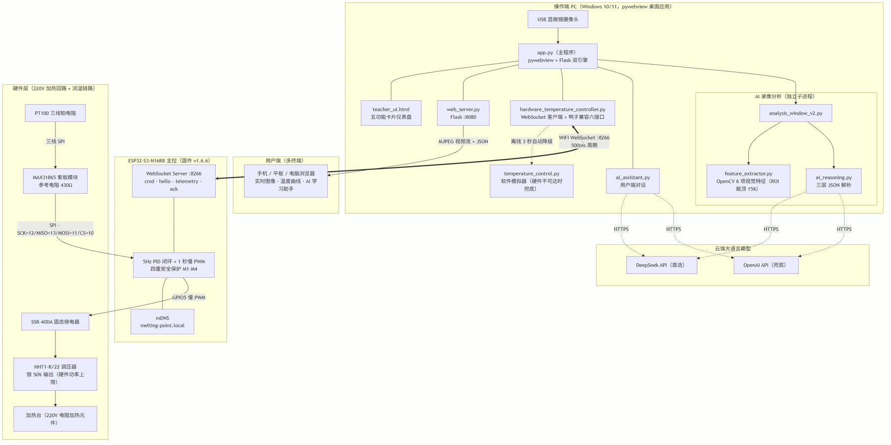
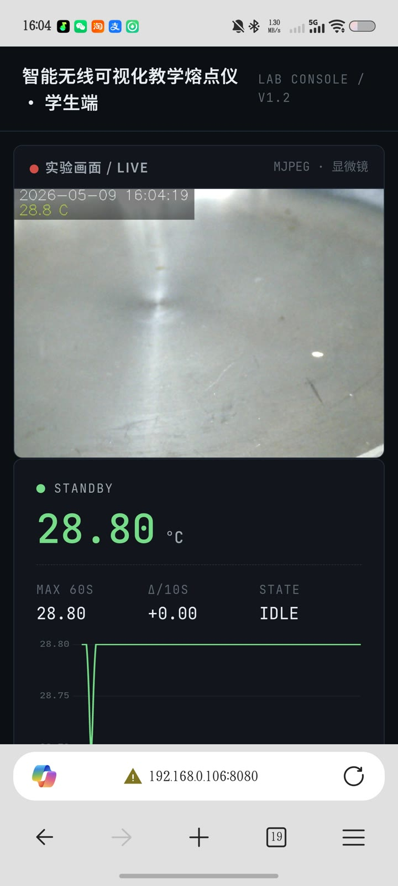
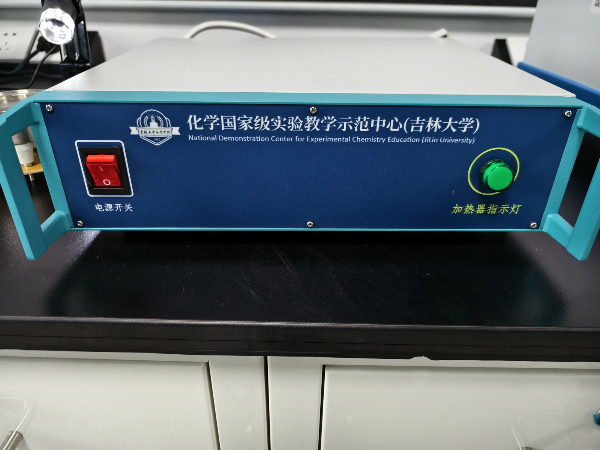

现象难共享
显微画面局限在单台设备，实验成员难以同步观察。
01 / THE PROBLEM
观察、控温、记录与判断往往彼此割裂。View+ 将实验画面、温度、控制状态和分析结果汇入同一套系统。
显微画面局限在单台设备，实验成员难以同步观察。
温度、录像与操作缺少统一时间轴，不利于回看与复核。
初熔与全熔判断需要经验，实验报告整理成本较高。
02 / ONE CONNECTED SYSTEM
真实仪器、嵌入式固件、桌面应用、移动浏览器与 AI 分析协同工作，同时保留离线与异常降级能力。


03 / MULTI-DEVICE EXPERIENCE
操作端负责仪器控制、录像和分析；用户端通过局域网浏览器查看实时画面、温度曲线和实验状态，无需安装额外客户端。
04 / ENGINEERING DEPTH
ESP32-S3 驱动 MAX31865/PT100 采集与 SSR 加热执行，配合 PID、慢 PWM、看门狗、故障锁存和温升异常检测。

OpenCV 抽取关键帧和6类视觉特征，再将结构化数据交给语言模型推理，降低对视觉模型的依赖。
录像、温度 CSV、历史回放、初熔/全熔判断与 Markdown 报告在同一工作流中完成。
覆盖配置隔离、凭据保护、测试脚本、部署文档、Windows 安装器与 SHA-256 校验。
硬件断线时软件端保持可用；敏感配置不进入仓库，安装版凭据由 Windows DPAPI 保护。
05 / BUILD JOURNEY
提交历史保留了真实的技术取舍、现场问题与持续迭代，而不是一次性拼装的演示项目。
建立 pywebview 混合应用、摄像头采集和实验分析窗口。
由视觉大模型转向 OpenCV 特征 + 文本推理，加入实时曲线和报告导出。
打通 ESP32-S3 开发、烧录、传感器和执行器方案。
完成真实测温、PID 加热、双端 UI、故障保护和现场联调。
构建闭源 Windows 安装器、配置保护和可验证交付流程。
整理开发历程，以脱敏公开页面呈现项目价值，源码继续保持私有。
TECH STACK
PRIVATE SOURCE · PUBLIC CASE STUDY
该项目源代码、专利材料和原始实验数据保持私有。本页用于展示系统设计、工程能力和开发历程；代码审阅与运行演示可在沟通后按需提供。